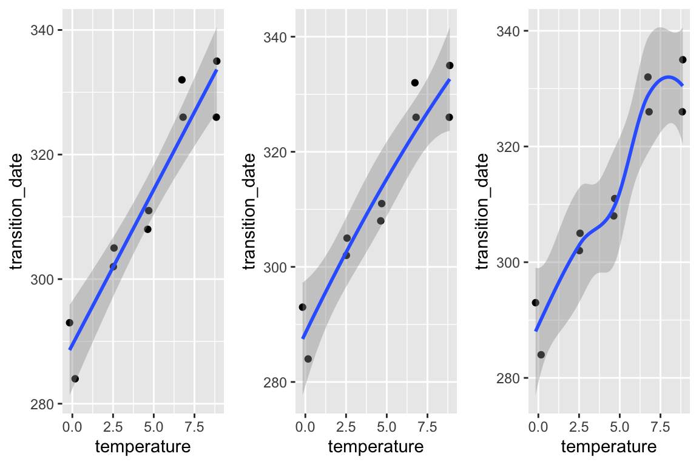
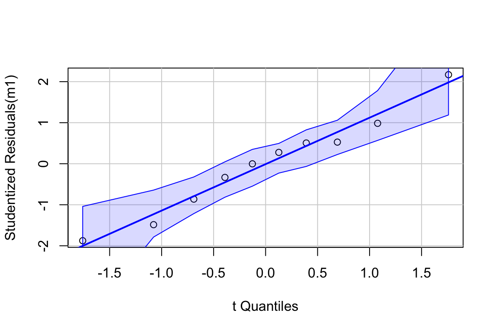
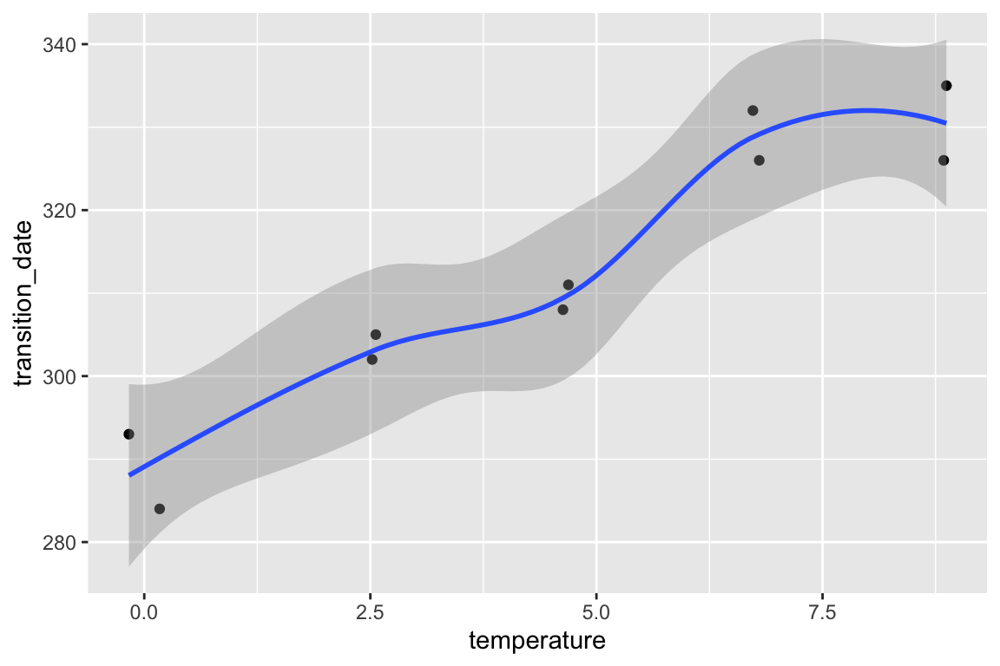
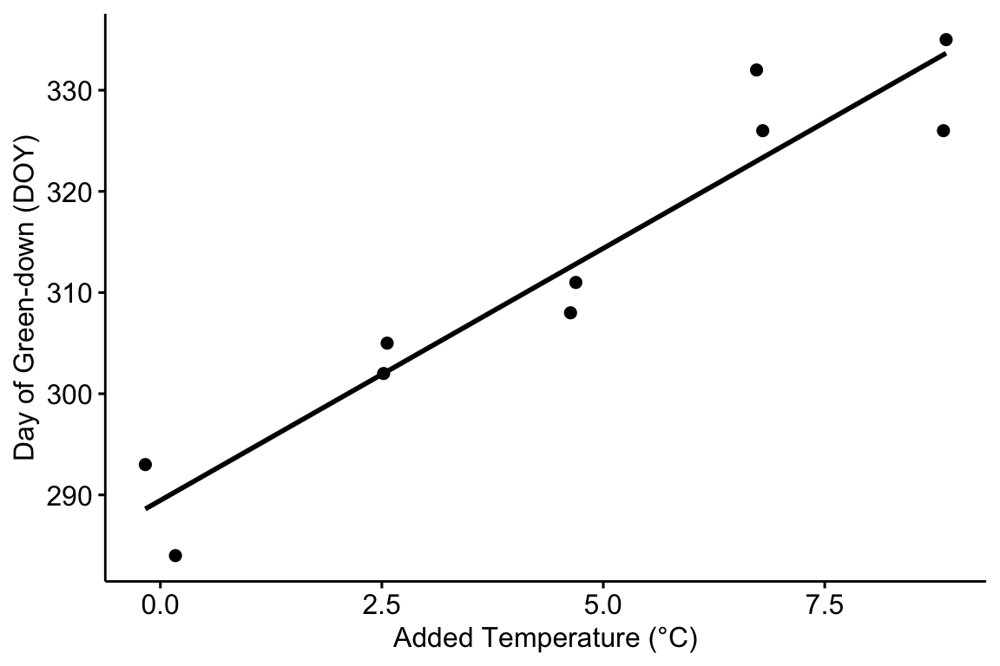
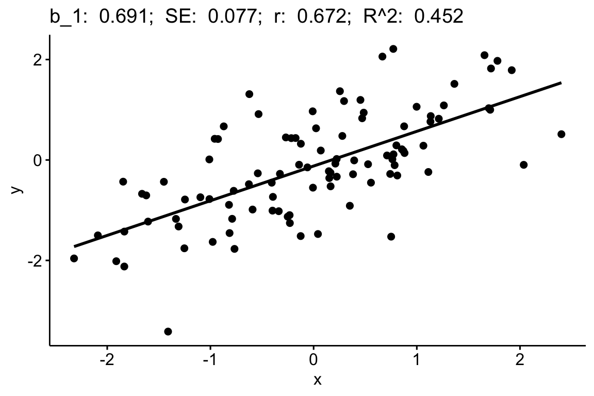

Chapter 9 Linear models with a single, continuous X (“regression”)
All updates to this book are now at https://middleprofessor.github.io/benchbiostats/
9.1 A linear model with a single, continuous X is classical “regression”
9.1.1 Analysis of “green-down” data
To introduce some principles of modeling with a single continuous \(X\) variable, I’ll use a dataset from
The data are from a long-term experiment on the effects of warming and CO2 on a high-carbon northern temperate peatland and is the focal dataset of the study. The experiment involves 10 large, temperature and CO2 controlled enclosures. CO2 is set to 400 ppm in five enclosures and 900 ppm in five enclosures. Temperature of the five enclosures within each CO2 level is set to 0, 2.25, 4.5, 6.75, or 9 °C above ambient temperature. The multiple temperature levels is a regression design, which allows a researcher to measure non-linear effects. Read more about the experimental design and the beautiful implementation.
The question pursued is in this study is, what is the causal effect of warming on the timing (or phenology) of the transition into photosynthetic activity (“green-up”) in the spring and of the transition out of photosynthetic activity (“green-down”) in the fall? The researchers measured these transition dates, or Day of Year (DOY), using foliage color. Here, we focus on the transition out of photosynthesis or “green-down” DOY.
Import the data
- Examine the data
gg1 <- qplot(x = temperature,
y = transition_date,
data = fig2c) +
geom_smooth(method = "lm")
gg2 <- qplot(x = temperature,
y = transition_date,
data = fig2c) +
geom_smooth(method = "lm", formula = y ~ poly(x, 2))
gg3 <- qplot(x = temperature,
y = transition_date,
data = fig2c) +
geom_smooth()
plot_grid(gg1, gg2, gg3, ncol=3)
No plot shows any obvious outlier that might be due to measurement blunders or curation error. The linear regression in the left-most plot clearly shows that a linear response is sufficient to capture the effect of temperature on day of green-down.
choose a model. Because the \(X\) variable (\(temperature\)) was experimentally set to five levels, the data could reasonably be modeled using either a linear model with a categorical \(X\) or a linear model with a continuous \(X\). The advantage of modeling \(temperature\) as a continuous variable is that there is only one effect, the slope of the regression line. If modeled as a categorical factor with five levels, there are, at a minimum, four interesting effects (the difference in means between each non-reference level and reference (temperature = 0) level). Also, for inference, modeling \(temperature\) as a continuous variable increases power for hypothesis tests.
fit the model
- check the model

The Q-Q plot indicates the distribution of residuals is well within that expected for a normal sample and there is no cause for concern with inference.

##
## Suggested power transformation: 0.6721303The spread-location plot shows no conspicuous trend in how the spread changes with the conditonal mean. There is no cause for concern with inference.
- inference from the model
m1_coeff <- summary(m1) %>%
coef()
m1_confint <- confint(m1)
m1_coeff <- cbind(m1_coeff, m1_confint)
m1_coeff## Estimate Std. Error t value Pr(>|t|) 2.5 % 97.5 %
## (Intercept) 289.458750 3.0593949 94.613071 1.738650e-13 282.403773 296.513728
## temperature 4.982745 0.5541962 8.990941 1.866888e-05 3.704767 6.260724The effect of added temperature on the day of green-down is 4.98 d per 1 °C (95% CI: 3.7, 6.3; p < 0.001).
- plot the model

Figure 9.1: Modification of the published Figure 2c showing the experimental effect of warming on the date of autumn green-down (the transition to fall foliage color) in a mixed shrub community. The bottom panel is a scatterplot. The regression line shows the expected value of Y (transition day of year) given a value of X (added temperature). The slope of the regression line is the estimate of the effect. The estimate and 95% confidence interval of the estimate are given in the top panel.
- Report the results
The modeled effect of added temperature is Slope: 4.98 (3.7, 6.26) d per 1 °C (9.1).
9.1.2 Learning from the green-down example
Figure 9.1 is a scatterplot with the green-down DOY for the mixed-shrub community on the \(Y\) axis and added temperature on the \(X\) axis. The line through the data is a regression line, which is the expected value of Y (green-down DOY) given a specific value of X (added temperature). The slope of the line is the effect of added temperature on timing of green-down. The intercept of the regression line is the value of the response (day of green-down) when \(X\) is equal to zero. Very often, this value is not of interest although the value should be reported to allow predictions from the model. Also very often, the value of the intercept is not meaningful because a value of \(X = 0\) is far outside the range of measured \(X\), or the value is absurd because it is impossible (for example, if investigating the effect of body weight on metabolic rate, the value \(weight = 0\) is impossible).
The intercept and slope are the coefficients of the model fit to the data, which is
\[\begin{equation} day_i = b_0 + b_1 temperature_i + e_i \tag{9.1} \end{equation}\]
where day is the day of green-down, temperature is the added temperature, and i refers (or “indexes”) the ith enclosure. This model completely reconstructs the day of green-down for all ten enclosures. For example, the day of green-down for enclosure 8 is
\[\begin{equation} 332 = 289.458750 + 4.982745 \times 6.73 + 9.00737 \end{equation}\]
The coefficients in the model are estimates of the parameters of the generating model fit to the data
\[\begin{align} day &= \beta_0 + \beta_1 temperature + \varepsilon\\ \varepsilon &\sim N(0, \sigma^2) \tag{9.2} \end{align}\]
A generating model of the data is used to make inference, for example, a measure of uncertainty in a prediction in the timing of green-down with future warming, or a measure of uncertainty about the effect of temperature on green-down.
9.1.3 Using a regression model for “explanation” – causal models
In this text, “explanatory” means “causal” and a goal of explanatory modeling is the estimate of causal effects using a causal interpretation of the linear model (=regression) coefficients. “What what? I learned in my stats 101 course that we cannot interpret regression coefficients causally”.
Statisticians (and statistics textbooks) have been quite rigid that a regression coefficient has a descriptive (or “observational”, see below) interpretation but not a causal interpretation. At the same time, statisticians (and statistics textbooks) do not seem to have any issue with interpeting the modeled effects from an experiment causally, since this is how they are interpreted. But if the modeled effects are simply coefficients from a linear (= regression) model, then this historical practice is muddled.
Part of this muddled history arises from the use of “regression” for models fit to observational data with one or more continuous \(X\) variables and the use of “ANOVA” for models fit to experimental data with one or more categorical \(X\). This separation seems to have blinded statisticians from working on the formal probabilistic statements underlying causal interpretations of effect estimates in ANOVA and the synthesis of these statements with the probabilistic statements in regression modeling. Two major approaches to developing formal, probabilistic statements of causal modeling in statistics are the Rubin causal model and the do-operator of Pearl. Despite the gigantic progress in these approaches, little to none of this has found its way into biostatistics textbooks.
9.1.3.1 What a regression coefficient means
Description: when we saw a one unit larger value in X, we saw, on average, a difference of b in Y.
Prediction: when we see a one unit larger value in X, we expect to see a difference of b in Y.
Explanation (causation): when we set X to have one unit larger value, we expect Y to change by b.
A linear (“regression”) model coefficient, such as the coefficient for temperature, \(\beta_1\), has three interpretations, an observational interpretation, a predictive interpretation, and a causal interpretation. This text is about causal interpretations, but to explain what is meant by this, I need to clarify the differences between causal and observational interpretations.
To clarify the differences, it’s useful to remember that an expected value from a regression model is a conditional mean
\[\begin{equation} \textrm{E}[day|temperature] = \beta_0 + \beta_1 temperature \tag{9.3} \end{equation}\]
In words “the expected value of day conditional on temperature is beta-knot plus beta-one times temperature”. An expected value is a long run average – if we had an infinite number of enclosures with \(temperature=x\) (where \(x\) is a specific value of added temperature, say 2.5 °C), the average \(day\) of these enclosures is \(\beta_0 + \beta_1 x\).
The parameter \(\beta_1\) is a difference in conditional means.
\[\begin{equation} \beta_1 = \textrm{E}[day|temperature = x+1] - \textrm{E}[day|temperature = x] \tag{9.4} \end{equation}\]
In words, “beta-one is the expected value of day of green-down when the temperature equals x + 1 minus the expected value of day of green-down when the temperature equals x.” A very short way to state this is “beta-one is a difference in conditional means”.
tl;dr. Note that the “+ 1” in this definition is mere convenience. Since the slope of a line is \(\frac{y_2 - y_1}{x_2 - x_1}\), where (\(x_1\), \(y_1\)) and (\(x_2\), \(y_2\)) are the coordinates of any two points on the line, it is convenient to choose two points that differ in \(X\) by one unit, which makes the fraction equal to the numerator only. The numerator is a difference in conditional means. It is also why the units of a regression coefficient are “per unit of \(X\) even if defined as a difference in two \(Y\) values.
The difference between observational and causal interpretations of \(\beta_1\) depends on the “event” conditioned on in \(\textrm{E}[day|temperature]\). Let’s start with the causal interpretation, which is how we should think about the regression coefficients in the green-down experiment.
9.1.3.2 Causal interpretation – conditional on “doing” X = x
In the causal interpretation of regression, \(\textrm{E}[day|temperature]\) is conditioned on “doing” a real or hypothetical intervention in the system where we set the value of \(temperature\) to a specific value \(x\) (“\(temperature=x\)), while keeping everything else about the system the same. This can be stated explicitly as \(\textrm{E}[day|\;do\;temperature = x]\). Using the do-operator, we can interpret \(\beta_1\) as an effect coefficient.
\[\begin{equation} \beta_1 = \textrm{E}[day|\;do\;temperature = x+1] - \textrm{E}[day|\;do\;temperature = x] \end{equation}\]
In words, “beta-one is the expected value of day of green-down were we to set the temperature to x + 1, minus the expected value of day of green-down were we to set the temperature to x.”
tl;dr. In the green-down experiment, the researchers didn’t set the temperature in the intervened enclosures to the ambient temperature + 1 but to ambient + 2.25, ambient + 4.5, ambient + 6.75, and ambient + 9.0. Again (see tl;dr above), the + 1 is mere convenience in the definition.
9.1.3.3 Observational interpretation – conditional on “seeing” X = x.
In the observational interpretation of regression, \(\textrm{E}[day|temperature]\) is conditioned on sampling data and “seeing” a value of \(temperature\). We can state this explicitly as \(\textrm{E}[day|\;see\;temperature]\). From this, we can interpret \(\beta_1\) as an observational coefficient
\[\begin{equation} \beta_1 = \textrm{E}[day|\;see\;temperature = x+1] - \textrm{E}[day|\;see \;temperature = x] \end{equation}\]
In words, “beta-one is the expected value of day of green-down when see that temperature equals x + 1 minus the expected value of day of green-down when we see that temperature equals x.” To understand what I mean by “observational”, let’s imagine that the green-down data do not come from an experiment in which the researchers intervened and set the added temperature to a specifc value but from ten sites that naturally vary in mean annual temperature. Or from a single site with 10 years of data, with some years warmer and some years colder. Data from this kind of study is observational – the researcher didn’t intervene and set the \(X\) values but merely observed the \(X\) values.
If we sample (or “see”) a site with a mean annual temperature that is 2.5 °C above a reference value, the expected day of green-down is \(\textrm{E}[day|temperature = 2.5 °C]\). That is, values near \(\textrm{E}[day|temperature = 2.5 °C]\) are more probable than values away from \(\textrm{E}[day|temperature = 2.5 °C]\). Or, if the only information that we have about this site is a mean annual temperature that is 2.5 °C above some reference, then our best prediction of the day of green-down would be \(\textrm{E}[day|temperature = 2.5 °C]\). We do not claim that the 4.98 day delay in green-down is caused by the warmer temperature, only that this is the expected delay relative to the reference having seen the data.
The seeing interpretation of a regression coefficient is descriptive– it is a description of a mathematical relationship. In this interpretation, the coefficient is not causal in the sense of what the expected response in \(Y\) would be were we to intervene in the system and change \(X\) from \(x\) to \(x+1\).
9.1.3.4 Omitted variable bias
What is the consequence of interpreting a regression coefficient causally instead of observationally?

Figure 9.2: a Directed Acyclic (or causal) Graph of a hypothetical world where the day of green-down is caused by two, correlated environmental variables, temperature and moisture, and to a noise factor (U) that represents an unspecified set of additional variables that are not correlated to either temperature or moisture.
Let’s expand the thought experiment where we have an observational data set of green down dates. In this thought experiment, only two variables systematically affect green-down DOY. The first is the temperature that the plants experience; the effect of \(temperature\) is \(\beta_1\). The second is the soil moisture that the plants experience; the effect of \(moisture\) is \(\beta_2\). \(temperature\) and \(moisture\) are correlated with a value \(\rho\). This causal model is graphically represented by the causal graph above.
Lets fit two linear models.
\[\begin{align} (\mathcal{M}_1)\; day &= b_0 + b_1 \; temperature + b_2 \; moisture + \varepsilon\\ (\mathcal{M}_2)\; day &= b_0 + b_1 \; temperature + \varepsilon \end{align}\]
\(\mathcal{M}_1\) the linear model including both \(temperature\) and \(moisture\) as \(X\) variables and \(\mathcal{M}_2\) the linear model including only \(temperature\) as an \(X\) variable. Given the true causal model above, \(b_1\) is an unbiased estimate of the true causal effect of temperature \(\beta_1\) in \(\mathcal{M}_1\) because the expected value of \(b_1\) is \(\beta_1\). By contrast, \(b_1\) is a biased estimate of the true causal effect of temperature \(\beta_1\) in \(\mathcal{M}_2\). The expected value of \(b_1\) in \(\mathcal{M}_2\) is the true, causal effect plus a bias term.
\[\begin{equation} \mathrm{E}(b_1|\mathcal{M}_1) = \beta + \rho \alpha \frac{\sigma_{moisture}}{\sigma_{temperature}} \end{equation}\]
This bias (\(\rho \alpha \frac{\sigma_{moisture}}{\sigma_{temperature}}\)) is omitted variable bias. The omitted variable \(moisture\) is an unmeasured, confounding variable. A variable \(X_2\) is a confounder for variable \(X_1\) if \(X_2\) has both a correlation with \(X_1\) and a path to the response \(Y\) that is not through \(X_1\). With ommitted variable bias, as we sample more and more data, our estimate of the effect doesn’t converge on the truth but the truth plus some bias.
9.1.3.5 Causal modeling with experimental versus observational data
Causal interpretation requires conditioning on “doing X=x”. For the green-down data, “doing X=x” is achieved by the random treatment assignment of the enclosures. How does random treatment assignment achieve this? Look again at Figure 9.2. If the values of \(treatment\) are randomly assigned, then, by definition, the expected value of the correlation between \(treatment\) and \(moisture\) is zero. In fact, the expected value of the correlation between \(treatment\) and any measurable variable at the study site is zero. Given, this, the expected value of the regression coefficient for \(temperature\) (\(b_1\)) is \(\beta\) because \(\rho=0\). That is, the estimate of the true effect is unbiased. It doesn’t matter if \(moisture\), or any other variable, is excluded from the model. (That said, we may want to include moisture or other variables in the model to increase precision of the causal effect. This is addressed in the chapter “Models with Covariates”). This is what an experiment does and why experiments are used to answer causal questions.
Can we use observational data for causal modeling? Yes, but the methods for this are outside of the scope of this text. The mathematical foundation for this is known as path analysis, which was developed by geneticist and evolutionary biologist Sewell Wright (I include this because this work has inspired much of how I think about biology and because he is both my academic grandfather and great-grandfather). Causal analysis of observational data in biology is rare outside of ecology and epidemiology. Good starting points for the modern development of causal analysis are Hernán MA and Robins JM (2020) and Burgess et al. (2018). A gentle introduction is Pearl and Mackenzie (2018).
9.1.4 Using a regression model for prediction – prediction models
The researchers in the green-down study also presented estimates of the effect of temperature on green-down using two observational datasets. Let’s use the one in Extended Data Figure 3d to explore using a regression model for prediction. The data are taken from measurements of the day of green-down over an 86 year period at a single site. The response variable is \(green\_down\_anomaly\) (the difference between the day of green down for the year and the mean of these days over the 86 years). The predictor variable is \(autumn\_temp\_anomaly\) (the difference between the mean temperature over the year and the mean of these means).

The plot in figure ?? shows the regression line of a linear model fit to the data. Two statistics are given in the plot.
- The p-value of the slope (the coefficient \(b_1\) of \(autumn\_temp\_anomaly\))
- The \(R^2\) of the model fit.
In addition, two intervals are shown.
- 95% confidence interval of the expected values in blue. The width of this band is a measure of the precision of the estimates of expected values.
- 95% prediction interval of the predictions in gray. The width of this band is a measure of how well the model predicts.
It is important that researchers knows what each of these statistics and bands are, when to compute them and when to ignore them them, and what to say about each when communicating the results.
9.1.4.1 95% CI and p-value
Both the 95% confidence interval of the expected values and the p-value are a function of the standard error of the slope coefficient \(b_1\) and so are complimentary statistics. The p-value is the probability of sampling the null that results in a \(t\)-value as or more extreme than the observed t for the coefficient \(b_1\). This null includes the hypothesis \(\beta_1 = 0\). The 95% confidence interval of the expected values is the band containing expected values (mean \(green\_down\_anomaly\) conditional on \(autumn\_temp\_anomaly\)) that are compatible with the data. There are a couple of useful ways of thinking about this band.
- The band captures an infinite number of regression lines that are compatible with the data. Some are more steep and predict smaller expected values at the low end of \(autumn\_temp\_anomaly\) and higher expected values at the high end of \(autumn\_temp\_anomaly\). Others are less steep and predict higher expected values at the low end of \(autumn\_temp\_anomaly\) and lower expected values at the high end of \(autumn\_temp\_anomaly\).
- The band captures the 95% CI of the conditional mean at every value of \(X\). Consider the 95% CI of the conditional mean at the mean value of \(X\). As we move away from this mean value (lower to higher \(X\)), the 95% CI of the conditional mean increases.
A 95% CI and p-value are useful statistics to report if the purpose is causal modeling, as in the example above using the experimental green-down data (where the 95% CI was not presented as a confidence band of the expected values but a CI of the estimate of the effect of added temperature). A 95% CI and p-value are also useful statistics to report if the purpose is descriptive modeling, simply wanting to know how the conditional mean of the response is related to an \(X\) variable.
9.1.4.2 95% prediction interval and \(R^2\)
Both the \(R^2\) and the 95% prediction interval are a function of the population variability of \(green\_down\_anomaly\) conditional on \(autumn\_temp\_anomaly\) (the spread of points along a vertical axis about the regression line) and are complimentary statistics. Briefly,
- the \(R^2\) is a measure of the fraction of the variance in the response that is accounted by the model (some sources say “explained by the model” but this is an odd use of “explain”). It is a number between 0 and 1 and is a measure of “predictability” if the goal is prediction modeling.
- The 95% prediction interval will contain a new observation 95% of the time. It provides bounds on a prediction – given a new observation, there is a 95% probability that the interval at \(x_{new}\) will contain \(y_{new}\).
To understand \(R^2\) and the 95% prediction interval a bit better, let’s back up.
\[\begin{equation} green\_down\_anomaly_i = b_0 + b_1 autumn\_temp\_anomaly_i + e_i (\#eq:doy_fit) \end{equation}\]
Model @ref(eq:eq:doy_fit) recovers the measured value of \(green\_down\_anomaly\) for any year, given the \(autumn\_temp\_anomaly\) for the year. The equation includes the linear predictor (\(b_0 + b_1 autumn\_temp\_anomaly_i\)) and the residual from the predictor (\(e_i\)). The predictor part of @ref(eq:doy_fit) is used to compute \(\hat{y}\) (“y hat”).
\[\begin{equation} \hat{y}_i = b_0 + b_1 autumn\_temp\_anomaly_i (\#eq:doy_hat) \end{equation}\]
The \(\hat{y}\) are fitted values, if the values are computed from the data that were used for the fit, or predicted values (or simply the prediction), if the values are computed from values of the predictor variables outside the set used to fit the model. For the purpose of plotting, generally, with models with categorical factors as \(X\), I prefer either modeled values or conditional means to fitted values.
9.1.4.3 \(R^2\)
A good model accounts for a sizable fraction of the total variance in the response. This fraction is the \(R^2\) value, which is given in summary(m1) and accessed directly with
## [1] 0.1305754\(R^2\) is the fraction of the total variance of \(Y\) that is generated by the linear predictor.
\[\begin{equation} R^2 = \frac{\mathrm{VAR}(\hat{y})}{\mathrm{VAR}(y)} \end{equation}\]
## [1] 0.1305754\(R^2\) will vary from zero (the model accounts for nothing) to one (the model accounts for everything). \(R^2\) is often described as the fraction of total variation explained by the model” but the usage of “explain” is observational and not causal. Because of the ambiguous usage of “explain” in statistics, I prefer to avoid the word.
It can be useful sometimes to think of \(R^2\) in terms of residual error, which is the variance of the residuals from the model. The larger the residual error, the smaller the \(R^2\), or
\[\begin{equation} R^2 = 1 - \frac{\mathrm{VAR}(e)}{\mathrm{VAR}(y)} \end{equation}\]
## [1] 0.1305754The smaller the residuals, the higher the \(R^2\) and the closer the predicted values are to the measured values. The sum of the model variance and residual variance equals the total variance and, consequently, \(R^2\) is a signal to signal + noise ratio. The noise in \(R^2\) is the sampling variance of the individual measures. The noise in a t-value is the sampling variance of the parameter (for m1, this is the sampling variance of \(b_1\)). This is an important distinction because it means that t and \(R^2\) are not related 1:1. In a simple model with only a single \(X\), one might expect \(R^2\) to be big if the p-value for the slope is tiny, but this isn’t necessarily true because of the different meaning of noise in each. A study with a very large sample size \(n\) can have a tiny p-value and a small \(R^2\). A p-value is not a good indicator of predictability. \(R^2\) is. This is explored more below.
9.1.4.4 Prediction interval
A good prediction model has high predictability, meaning the range of predicted values is narrow. A 95% CI is a reasonable range to communicate. For any decision making using prediction, it is better to look at numbers than a band on a plot.
| Autumn Temp Anomaly (°C) | Expected (days) | 2.5% (days) | 97.5% (days) |
|---|---|---|---|
| 0.5 | 0.8 | -8.7 | 10.3 |
| 1.0 | 1.6 | -7.9 | 11.1 |
| 1.5 | 2.4 | -7.2 | 12.0 |
| 2.0 | 3.2 | -6.4 | 12.8 |
| 2.5 | 4.0 | -5.7 | 13.7 |
Given these data and the fit model, if we see a 2 °C increase in mean fall temperature, we expect the autumn green-down to extend 3.2 days. This expectation is an average. We’d expect 95% of actual values to range between -6.4 days and 12.8 days. This is a lot of variability. Any prediction has a reasonable probability of being over a week early or late. This may seem surprising given the p-value of the fit, which is 0.0006. But the p-value is not a reliable indicator of predictability. It is a statistic related to the blue band, not the gray band.
To understand this prediction interval a bit more, and why a p-value is not a good indicator of predictability, it’s useful to understand what makes a prediction interval “wide”. The width of the prediction interval is a function of two kinds of variability
- The variance of the expected value at a specific value of \(X\). This is the square of the standard error of \(b_1\). The blue band is communicating the CI based on this variance. The p-value is related to the wideth of this band.
- The variance of \(Y\) at a specific value of \(X\). This variance is \(\sigma^2\). It is useful for learning to think about the equation for the estimate of this variance.
\[\begin{equation} \hat\sigma^2 = \frac{\sum{e_i^2}}{N-2} \end{equation}\]
Again, \(e_i\) is the residual for the ith case. The denominator (\(N-2\)) is the degrees of freedom of the model. Computing \(\hat\sigma^2\) manually helps to insure that we understand what is going on.
## [1] 4.736643## [1] 4.736643Remember that an assumption of the linear models that we are working with at this point is, this variance is constant for all values of \(X\), so we have a single \(\sigma\). Later, we will cover linear models that model heterogeneity in this variance. \(\sigma\) is a function of variability in the population – it is the population standard deviation conditional on \(X\).
Importantly, predictability is a function of both these components of variability. As a consequence, it is \(R^2\), and not the p-value, that is the indicator of predictability. In the observational green-down data, even if we had thousands of years of data, we would still have a pretty low \(R^2\) because of the population variability of \(green\_down\_anomaly\) at a given \(autumn\_temp\_anomaly\).
9.1.4.5 Median Absolute Error and Root Mean Square Error are absolute measures of predictability
A p-value is not at all a good guide to predictability. \(R^2\) is proportional to predictability but is not really useful in any absolute sense. If we want to predict the effect of warming on the day of green-down, I would like to have a measure of predictability in the units of green-down, which is days. The prediction interval gives this for any value of \(X\). But what about an overall measure of predictability?
Three overall measures of predictability are
- \(\hat{\sigma}\), the estimate of \(\sigma\). This is the standard deviation of the sample conditional on \(X\).
- \(RMSE\), the root mean squared error. This is
\[\begin{align} SSE &= \sum{(y_i - \hat{y}_i)^2}\\ MSE &= \frac{SSE}{N}\\ RMSE &= \sqrt{MSE} \end{align}\]
\(SSE\) (“sum of squared error”) is the sum of the squared residuals (\(y_i - \hat{y}_i\)) of the model. \(MSE\) (“mean squared error”) is the mean of the squared errors. \(RMSE\) is the square root of the mean squared error. \(RMSE\) is almost equal to \(\hat{\sigma}\). The difference is the denominator, which is \(N\) in the computation of \(RMSE\) and \(df\) (the degrees of freedom of the model, which is \(N\) minus the number of fit parameters) in the computation of \(\hat{\sigma}\).
- \(MAE\), the mean absolute error. This is
\[\begin{equation} MAE = \frac{1}{N}\sum{|y_i - \hat{y}_i|} \end{equation}\]
| sigma | RMSE | MAE |
|---|---|---|
| 4.74 | 4.68 | 3.58 |
If the goal of an analysis is prediction, one of these statistics should be reported. For the model fit to the observational green-down data in Extended Figure 3d, these three statistics are given in Table ?? above (to two decimal places simply to show numerical difference between \(\hat{\sigma}\) and \(RMSE\)). All of these are measures of an “average” prediction error in the units of the response. The average error is either 4.7 or 3.6 days, depending on which statistic we report. Why the difference? Both \(\hat{\sigma}\) and \(RMSE\) are functions of squared error and so big differences between predicted and actual value are emphasized. If an error of 6 days is more than twice as bad than an error of 3 days, report \(RMSE\). Why \(RMSE\) and not \(\hat{\sigma}\)? Simply because researchers using prediction models are more familiar with \(RMSE\). If an error of 6 days is not more than twice as bad than an error of 3 days, report \(MAE\).
9.1.4.6 Prediction modeling is more sophisticated than presented here
For data where the response is a non-linear function of the predictor, or for data with many predictor variables, researchers will often build a model using a model selection method. Stepwise regression is a classical model selection method that is commonly taught in intro biostatistics and commonly used by researchers. Stepwise regression as a method of model selection has many well-known problems and should be avoided.
Some excellent books that are useful for building models and model selection are
9.1.5 Using a regression model for creating a new response variable – comparing slopes of longitudinal data
In the study in this example, the researchers compared the growth rate of tumors in mice fed normal chow versus mice with a methionine restricted diet. Growth rate wasn’t actually compared. Instead, the researchers used a t-test to compare the size of the tumor measured at six different days. A problem with multiple t-tests for this dataset is that the errors (residuals from the model) on one day are correlated with the errors from another day because of the repeated measures on each mouse. This correlation will inflate Type I error rate.
Instead of six t-tests, a better strategy for these data is to use a regression to calculate a tumor growth rate for each mouse. There are sixteen mice so this is sixteen fit models. Here I use a “for loop” to fit the model to the data from a single mouse and use the slope (\(b_1\)) as the estimate of the tumor growth rate for that mouse.
Use a for-loop to estimate growth rate for each mouse. In each pass through the loop
- the subset of fig1f (the data in long format) belonging to mouse i is created
- the linear model
volume ~ dayis fit to the subset - the coefficient of day (the slope, \(b_1\)) is inserted in mouse i’s row in the column “growth” in the data.table “fig1f_wide”.
At the end of the loop, we have the data.table fig1f_wide which has one row for each mouse, a column for the treatment factor (diet) and a column called “growth” containing each mouse’s growth rate. There are also columns of tumor volume for each mouse on each day but these are ignored.
N <- nrow(fig1f_wide)
id_list <- fig1f_wide[, id]
for(i in 1:N){
mouse_i_data <- fig1f[id == id_list[i]] # subset
fit <- lm(volume ~ day, data = mouse_i_data)
fig1f_wide[id == id_list[i], growth := coef(fit)[2]]
}
# View(fig1f_wide)
# qplot(x = treatment, y = growth, data = fig1f_wide)
# qplot(x = day, y = volume, color = treatment, data = fig1f) + geom_smooth(aes(group = id), method = "lm", se = FALSE)Step 3. fit the model
Step 5. inference from the model
## Estimate Std. Error t value Pr(>|t|) 2.5 % 97.5 %
## (Intercept) 52.63406 3.102096 16.967258 9.865155e-11 45.98072 59.28739
## treatmentMR -23.57616 4.387026 -5.374065 9.809457e-05 -32.98540 -14.16693Step 6. plot the model

9.2 Working in R
9.2.1 Fitting the linear model
A linear model is fit with the lm function, which is very flexible and will be a workhorse in much of this text.
m1 is an lm model object that contains many different kinds information, such as the model coefficients.
## (Intercept) temperature
## 289.458750 4.982745We’ll return to others, but first, let’s explore some of the flexibility of the lm function. Two arguments were sent to the function
- the model formula
transition_date ~ temperaturewith the formY ~ X, where Y and X are names of columns in the data.
- The model formula itself can be assigned to a variable, which is useful when building functions. An example
coef_table <- function(x, y, data){
m1_form <- formula(paste(y, "~", x))
m1 <- lm(m1_form, data = data)
return(coef(summary(m1)))
}
coef_table(x = "temperature",
y = "transition_date",
data = fig2c)## Estimate Std. Error t value Pr(>|t|)
## (Intercept) 289.458750 3.0593949 94.613071 1.738650e-13
## temperature 4.982745 0.5541962 8.990941 1.866888e-05- Both Y and X can also be column names embedded within a function, for example
## (Intercept) temperature
## 5.6690276 0.0160509or
## (Intercept) scale(temperature)
## 4.171921e-16 9.539117e-01- The data frame (remember that a data.table is a data frame) containing the columns with the variable names in the model formula. A data argument is not necessary but it is usually the better way (an exception is when a researcher wants to create a matrix of Y variables or to construct their own model matrix)
type ?lm into the console to see other arguments of the lm function.
## (Intercept) x
## 204.8866185 0.43247559.2.2 Getting to know the linear model: the summary function
The lm function returns an lm object, which we’ve assigned to the name m1. m1 contains lots of information about our fit of the linear model to the data. Most of the information that we want for most purposes can be retrieved with the summary function, which is a general-purpose R command the works with many R objects.
##
## Call:
## lm(formula = transition_date ~ temperature, data = fig2c)
##
## Residuals:
## Min 1Q Median 3Q Max
## -7.5062 -3.8536 0.6645 2.7537 9.0074
##
## Coefficients:
## Estimate Std. Error t value Pr(>|t|)
## (Intercept) 289.4588 3.0594 94.613 1.74e-13 ***
## temperature 4.9827 0.5542 8.991 1.87e-05 ***
## ---
## Signif. codes: 0 '***' 0.001 '**' 0.01 '*' 0.05 '.' 0.1 ' ' 1
##
## Residual standard error: 5.443 on 8 degrees of freedom
## Multiple R-squared: 0.9099, Adjusted R-squared: 0.8987
## F-statistic: 80.84 on 1 and 8 DF, p-value: 1.867e-05What is here:
Call. This is the model that was fit
Residuals. This is a summary of the distribution of the residuals. From this one can get a sense of the distribution (for inference, the model assumes a normal distribution with mean zero). More useful ways to examine this distribution will be introduced later in this chapter.
Coefficients table. This contains the linear model coefficients and their standard error and associated \(t\) and \(p\) values.
- The column of values under “Estimate” are the coefficients of the fitted model (equation (9.1)). Here, 289.4587503 is the intercept (\(b_0\)) and 4.9827453 is the effect of \(temperature\) (\(b_1\)).
- The column of values under “Std. Error” are the standard errors of the coefficients.
- The column of values under “t value” are the t-statistics for each coefficient. A t-value is a signal to noise ratio. The coefficient \(b_1\) is the “signal” and the SE is the noise. Get used to thinking about this ratio. A t-value greater than about 3 indicates a “pretty good” signal relative to noise, while one much below than 2 is not.
- The column of values under “Pr(>|t|)” is the p-value, which is the t-test of the estimate. What is the p-value a test of? The p-value tests the hypothesis “how probable are the data, or more extreme than than the data, if the true parameter is zero?”. Formally \(p = \mathrm{freq(t' \ge t|H_o)}\), where \(t'\) is the hypothetical t-value, t is the observed \(t\)-value, and \(H_o\) is the null hypothesis. We will return to p-values in Chapter xxx.
Signif. codes. Significance codes are extremely common in the wet bench experimental biology literature but do not have much to recommend. I’ll return to these in the p-values chapter.
Beneath the Signif. codes are some model statistics which are useful
Residual standard error This is \(\sqrt{\sum{e_i^2}/(n-2)}\), where \(e_i\) are the residuals in the fitted model. “degrees of freedom” is the number of \(e_i\) that are “allowed to vary” after fitting the parameters, so is the total sample size (\(n\)) minus the number of parameters in the model. The fit model has two fit parameters (\(b_0\) and \(b_1\) so the df is \(n-2\). Note that this is the denominator in the residual standard error equation.
Multiple R-squared. This is an important but imperfect summary measure of the whole model that effectively measures how much of the total variance in the response variable “is explained by” the model. Its value lies between zero and 1. It’s a good measure to report in a manuscript, especially for observational data.
F-statistic and p-value. These are statistics for the whole model (not the individual coefficients) and I just don’t find these very useful.
9.2.3 Inference – the coefficient table
There are different ways of
# step by step
m1_summary <- summary(m1) # get summary
m1_coef_p1 <- coef(m1_summary) # extract coefficient table
m1_coef_p2 <- confint(m1) # get CIs
m1_coef <- cbind(m1_coef_p1, m1_coef_p2) # column bind the two
# this can be shortened (but still readable) using
m1_coef <- cbind(coef(summary(m1)),
confint(m1))
m1_coef## Estimate Std. Error t value Pr(>|t|) 2.5 % 97.5 %
## (Intercept) 289.458750 3.0593949 94.613071 1.738650e-13 282.403773 296.513728
## temperature 4.982745 0.5541962 8.990941 1.866888e-05 3.704767 6.260724Note that the p-value for the coefficient for temperature is very small and we could conclude that the data are not compatible with a model of no temperature effect on day of green-down. But did we need a formal hypothesis test for this? We haven’t learned much if we have only learned that the slope is “not likely to be exactly zero” (Temperature effects everything in biology). A far more important question is not if there is a relationship between temperature and day of green-down, but what is the sign and magnitude of the effect and what is the uncertainty in our estimate of this effect. For this, we we want the coefficient and its SE or confidence interval, both of which are in this table. Remember, our working definition of a confidence interval:
A confidence interval contains the range of parameter values that are compatible with the data, in the sense that a \(t\)-test would not reject the null hypothesis of a difference between the estimate and any value within the interval
A more textbook way of defining a CI is: A 95% CI of a parameter has a 95% probability of including the true value of the parameter. It does not mean that there is a 95% probability that the true value lies in the interval. This is a subtle but important difference. Here is a way of thinking about the proper meaning of the textbook definition: we don’t know the true value of \(\beta_1\) but we can 1) repeat the experiment or sampling, 2) re-estimate \(\beta_1\), and 3) re-compute a 95% CI. If we do 1-3 many times, 95% of the CIs will include \(\beta_1\) within the interval.
Confidence intervals are often interpreted like \(p\)-values. That is, the researcher looks to see if the CI overlaps with zero and if it does, concludes there is “no effect”. First, this conclusion is not correct – the inability to find sufficient evidence for an effect does not mean there is no effect, it simply means there is insufficient evidence to conclude there is an effect!
Second, what we want to use the CI for is to guide us about how big or small the effect might reasonably be, given the data. Again, A CI is a measure of parameter values that are “compatible” with the data. If our biological interpretations at the small-end and at the big-end of the interval’s range radically differ, then we don’t have enough precision in our analysis to reach an unambiguous conclusion.
9.2.4 How good is our model? – Model checking
There are two, quite different senses of what is meant by a good model.
- How good is the model at predicting? Or, how much of the variance in the response (the stuff to be “explained”) is accounted for by the model? This was described above.
- How well do the data look like a sample from the modeled distribution? If not well, we should consider alternative models. This is model checking.
For inference, a good model generates data that look like the real data. If this is true, our fit model will have well-behaved residuals. There are several aspects of “well-behaved” and each is checked with a diagnostic plot. This model checking is covered in more detail in chapter xxx.
Inference from model (9.2) assumes the data were sampled from a normal distribution. To check this, use a quantile-quantile or Q-Q plot. The qqPlot function from the car package generates a more useful plot than that from Base R.

Approximately normal residuals will track the solid line and stay largely within the boundaries marked by the dashed lines. The residuals from m1 fit to the green-down data track the solid line and remain within the dashed lines, indicating adequate model fit.
Note that a formal test of normality is often recommended. Formal tests do not add value above a diagnostic check. Robustness of inference (for example, a p-value) is a function of the type and degree of “non-normalness”, not of a p-value. For a small sample, there is not much power to test for normality, so samples from non-normal distributions pass the test (\(p > 0.05\)) and are deemed “normal”. For large samples, samples from distributions that deviate slightly from normal fail the test (\(p < 0.05\)) and are deemed “not normal”. Inference with many non-normal samples with large \(n\) are very robust (meaning infernece is not likely to fool you with randomness).
Inference from model (9.2) assumes homogeneity of the response conditional on \(X\). For a continuous \(X\), this means the residuals should have approximately equal variance at low, mid, and high values of \(X\) (and everywhere in between). One can visually inspect the spread of points in the \(Y\) direction across the groups for categorical \(X\) or along the X-axis for continuous \(X\). A useful method for checking how residual variance changes (usually increases) with the conditional mean of \(Y\) is a spread-location plot. The spreadLevelPlot(m1) function from the car package is useful.

##
## Suggested power transformation: 0.6721303The dashed blue line shows linear trends while the magenta line shows non-linear trends. For the green-down data, the dashed line is very flat while the magenta-line shows what looks like random fluctations. Taken together, the two lines indicate adequate model fit.
9.2.5 Plotting models with continuous X
9.2.5.1 Quick plot
qplot from the ggplot package is useful for initial examinations of the data

Some variations of this quick plot to explore include
- use
geom_smooth(method = "lm")
9.2.5.2 ggpubr plots
ggpubr is a package with functions that automates the construction of publication-ready ggplots. ggscatter can generate a publishable plot with little effort.
ggscatter(data = fig2c,
x = "temperature",
y = "transition_date",
add = "reg.line",
xlab = "Added Temperature (°C)",
ylab = "Day of Green-down (DOY)")
It take only a little more effort to add useful modifications.
ggscatter(data = fig2c,
x = "temperature",
y = "transition_date",
color = "black",
fill = "red",
shape = 21,
size = 3,
add = "reg.line",
add.params = list(color = "steelblue",
fill = "lightgray"),
conf.int = TRUE,
xlab = "Added Temperature (°C)",
ylab = "Day of Green-down (DOY)") +
stat_regline_equation(size = 4,
label.y = 340) +
stat_cor(aes(label = paste(..rr.label.., ..p.label.., sep = "~`,`~")),
size = 4,
label.y = 335) +
NULL
Notes
- The interval shown is the 95% confidence interval of the expected values, which is what we want to communicate with the experimental green-down data. Were we to want to use this as a prediction model, we would want the 95% prediction interval. I’m not sure that ggpubr can plot a prediction interval. To see how I plotted the prediction interval in Figure ?? above, see the Hidden Code section below.
- The arguments of the
ggscatterfunction are typed in explicitly (x = "temperarture"and not just"temperature"). Each argument starts on a new line to increase readability. - The
+after theggscatterfunction adds additional layers to the plot. Each additional component is started on a new line to increase readability. - The first line of the
stat_corfunction (everything withinaes()) plots the \(R^2\) instead of the correlation coefficient \(r\). Copy and pasting this whole line just works. - Comment out the line of the ggplot script starting with
stat_corand re-run (comment out by inserting a#at the front of the line. A consistent way to do this is to triple-click the line to highlight the line and then type command-shift-c on Mac OS). The script runs without error becauseNULLhas been added as the final plot component. Adding “NULL” is a useful trick.
ggscatter(data = efig_3d,
x = "autumn_temp_anomaly",
y = "green_down_anomaly",
color = "black",
fill = "red",
shape = 21,
size = 3,
add = "reg.line",
add.params = list(color = "steelblue",
fill = "lightgray"),
conf.int = TRUE,
xlab = "Added Temperature (°C)",
ylab = "Day of Green-down (DOY)")
9.2.5.3 ggplots
Use ggplot from the ggplot2 package for full control of plots. See the Hidden Code below for how I generated the plots in Figure 9.1 above.
9.2.6 Creating a table of predicted values and 95% prediction intervals
efig_3d is the data.table created from importing the data in Extended Data Figure 3d above. The fit model is
The predict(efig3d_m1) function is used to compute either fitted or predicted values, and either the confidence or prediction interval of these values.
Unless specified by newdata, the default x-values used to generate the y in predict(efig3d_m1) are the x-values in the data used to fit the model. The returned values are the expected value for each \(x_i\) in the data. The argument newdata passes a data.frame (remember a data.table is a data.frame!) with new x-values. Since these x-values were not in the data used to fit the model, the returned \(y_{hat}\) are predicted values.
The range of x-values in the data is
## [1] -2.673793 2.568045Let’s get predicted values for a value of \(autumn\_temp\_anomaly = 2\).
## 1
## 3.192646And predicted values across the range of measured values
## 1 2 3 4
## -3.192646 -1.596323 1.596323 3.192646Add 95% confidence intervals (this could be used to create the band for plotting)
## fit lwr upr
## 1 -3.192646 -5.2485713 -1.1367215
## 2 -1.596323 -2.9492686 -0.2433778
## 3 1.596323 0.2433778 2.9492686
## 4 3.192646 1.1367215 5.2485713Change to the 95% prediction intervals
## fit lwr upr
## 1 -3.192646 -12.833739 6.448446
## 2 -1.596323 -11.112325 7.919679
## 3 1.596323 -7.919679 11.112325
## 4 3.192646 -6.448446 12.833739Put this all together in a pretty table. I’ve used knitr’s kable function but there are table packages in R that allow extensive control of the output.
efig3d_m1 <- lm(green_down_anomaly ~ autumn_temp_anomaly, data = efig_3d)
new_dt <- data.table(autumn_temp_anomaly = c(-2, -1, 1, 2))
prediction_table <- predict(efig3d_m1,
newdata = new_dt,
interval = "prediction",
se.fit = TRUE)$fit
prediction_table <- data.table(new_dt, prediction_table)
pretty_names <- c("Autumn Temp Anomaly", "Estimate", "2.5%", "97.5%")
setnames(prediction_table, old = colnames(prediction_table), new = pretty_names)
knitr::kable(prediction_table, digits = c(1, 1, 1, 1))| Autumn Temp Anomaly | Estimate | 2.5% | 97.5% |
|---|---|---|---|
| -2 | -3.2 | -12.8 | 6.4 |
| -1 | -1.6 | -11.1 | 7.9 |
| 1 | 1.6 | -7.9 | 11.1 |
| 2 | 3.2 | -6.4 | 12.8 |
9.4 Try it
9.4.1 A prediction model from the literature
The data come from the top, middle plot of Figure 1e of
The researchers built prediction models from a hybrid mouse diversity panel (HMDP) to predict liver lipid levels from measured plasma lipid levels in mice and in humans. The value of the predictor (\(X\)) variable for an individual is not a measured value of a single plasma lipid but the predicted value, or score, from the prediction model based on an entire panel of lipid measurements in that individual. The \(Y\) variable for the individual is the total measured level across a family of lipids (ceramides, triacylglycerols, diacylglycerols) in the liver of the individual. The question is, how well does the prediction score predict the actual liver level?
- Use the data for TG (triacylglycerols) (the top, middle plot of Figure 1e). The column D is the “score” from the prediction model using plasma lipid levels. This is the \(X\) variable (the column header is “fitted.total.Cer”). The column E is the total measured liver TG, so is the \(Y\) variable.
- Fit the linear model y ~ x.
- Create a publication-quality plot of liver TG (Y-axis) against score (X-axis) – what the researchers labeled “fitted.total.Cer”. Include \(R^2\) on the plot.
- Advanced – add a 95% prediction interval to the plot (the template code for this is in the Hidden Code section for efig3d)
- Create a table of expected liver TG and 95% prediction interval of liver TG of the score values (13.5, 14, 14.5, 15, 15.5, 16).
- Comment on the predictability of liver TG using the plasma scores.
`
9.5 Intuition pumps
9.5.1 Correlation and $R^2
In the code below
- change the value of
nto explore effect on the variability of the estimate. Look at this variability, and the magnitude of the SE, and the magnitude of the p-value. - change the value of
beta_1to explore effect on what different slopes and correlations look like. Notice that if the variance is fixed (as in this simulation) the expected slope and expected correlation are equal. (Because I’ve fixed the variance in this simple simulation, this code will fail if abs(beta_1) >= 1).
n <- 100 # choose between 3 and 10^5
beta_1 <- 0.6 # choose a value between -0.99 and 0.99
x <- rnorm(n)
y <- beta_1*x + sqrt(1-beta_1^2)*rnorm(n)
m1 <- lm(y ~ x)
slope <- paste("b_1: ", round(coef(m1)[2], 3))
se <- paste("SE: ", round(coef(summary(m1))[2,2], 3))
r <- paste("r: ", round(cor(x,y), 3))
r2 <- paste("R^2: ", round(summary(m1)$r.squared, 3))
ggscatter(data = data.table(x=x, y=y), x = "x", y = "y",
add = "reg.line") +
ggtitle(label = paste(slope,se,r,r2,sep="; "))